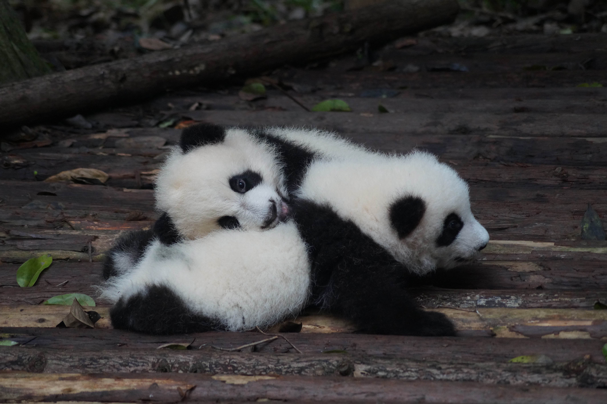
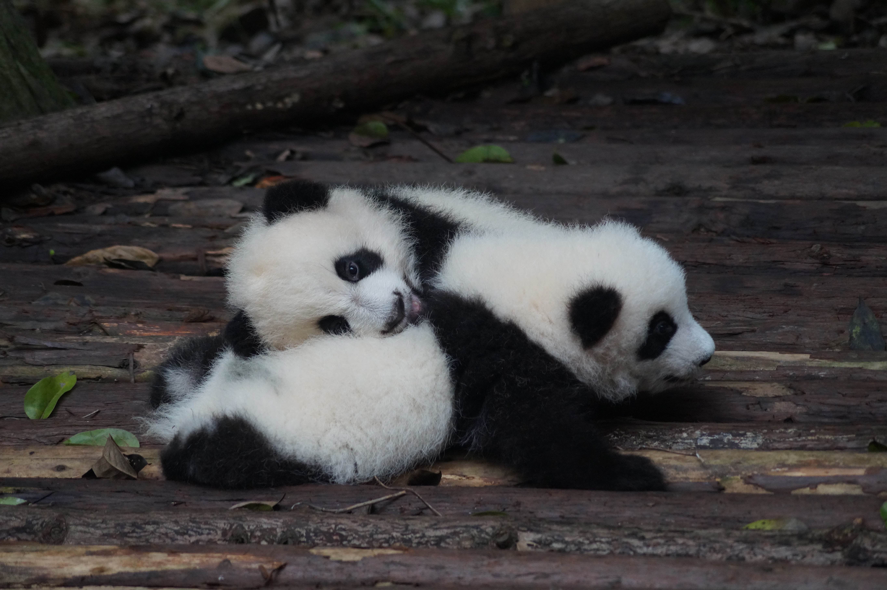

大貓熊是中國國家一級保護動物，IUCN紅色名錄內列為易危物種。1958年設立的四川臥龍自然保護區的保護內容的重點就是大貓熊，這個保護區由國家林業局直接管轄。 但由於當時較落後的保護觀念和生態學知識的相對匱乏，1980年代期間雖然全中國都在高喊「保護大貓熊」，但真正有利於貓熊的做法卻並不多。
許多人都認為最好的保育辦法就是從野外捉來貓熊進行人工飼養，而飼養條件較差和工作人員缺乏飼養相關的一些科學常識，使許多研究基地成為貓熊永久的牢籠。 對於竹子開花給貓熊帶來的負面效果，也通常是通過捕捉貓熊的方式解決，沒有研究它的食性進化和評估竹子死亡對它的實際影響。由於棲息地被破壞、環境污染、與種群隔離等原因，使野外種群的繁衍出現危機。 1998年天然林砍伐的全面禁止和禁止個人擁有槍枝的實施，在一定程度上保護了貓熊的生存。1992年以後，向保護區內的移民被禁止，並安排居民陸續遷出，使貓熊的棲息地得到了一定的保證。 經過多年的保護工作，有些地方大貓熊的野外種群數量開始上升。
截至2004年，一個為期4年的《全國第三次大貓熊調查報告》統計指出野外大貓熊總數約為1596隻，較1985年的1114隻為多。其中僅約有273隻野生秦嶺大貓熊，僅佔全國大貓熊總數的17％。 2016年9月，隨著貓熊數量持續增加，國際自然保護聯盟在《紅色名錄》將其保護狀態從瀕危調整為易危。
 

| 熊猫国家表格 | ||
|---|---|---|
| 国家 | 年份 | 熊猫名字 |
| 墨西哥 | 1975 | 迎迎、贝贝 |
| 台湾 | 2008 | 团团、圆圆 |
| 日本 | 2011 | 比力、仙女 |
| sum | 6只熊猫 | |